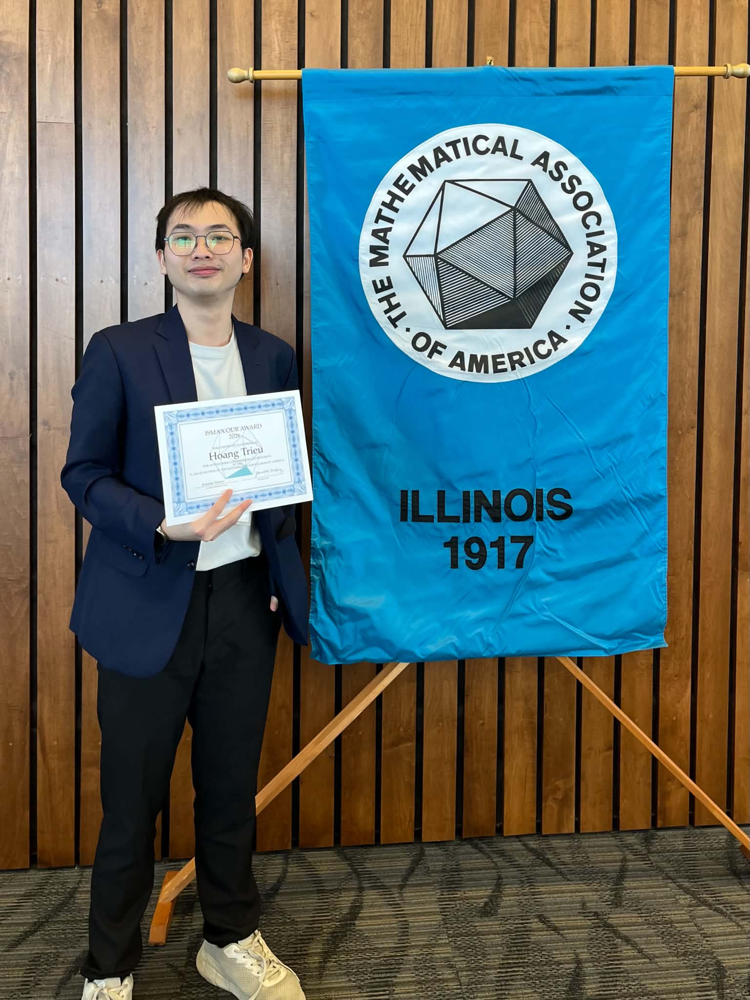
I'M GLAD YOU ARE HERE!
You only need 2 seconds on this website
to know how much I love doing Math
(and Physics, and Computer Science)
Spending a semester in Hungary completely changed how I think. Traveled 9 countries in 3 months, and I would love to do it again!
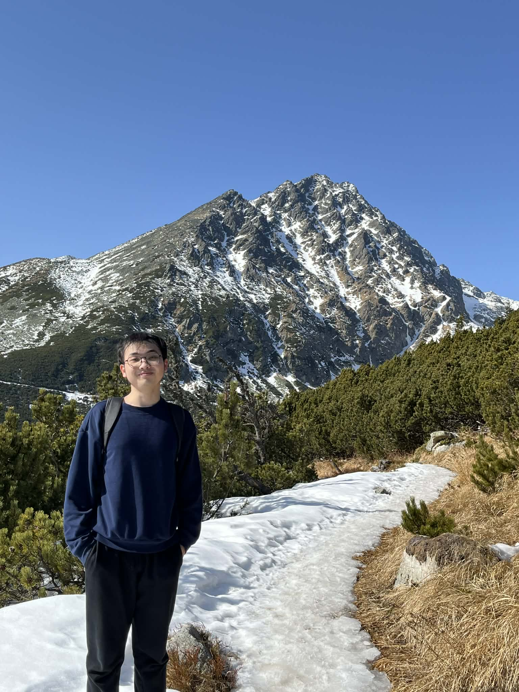
TravelI love hiking with my friends after long weeks of Maths. Sometimes we go out for a chill walk. Sometimes it is a full ironman mode, and if we are not careful enough we would be on TV the next morning.
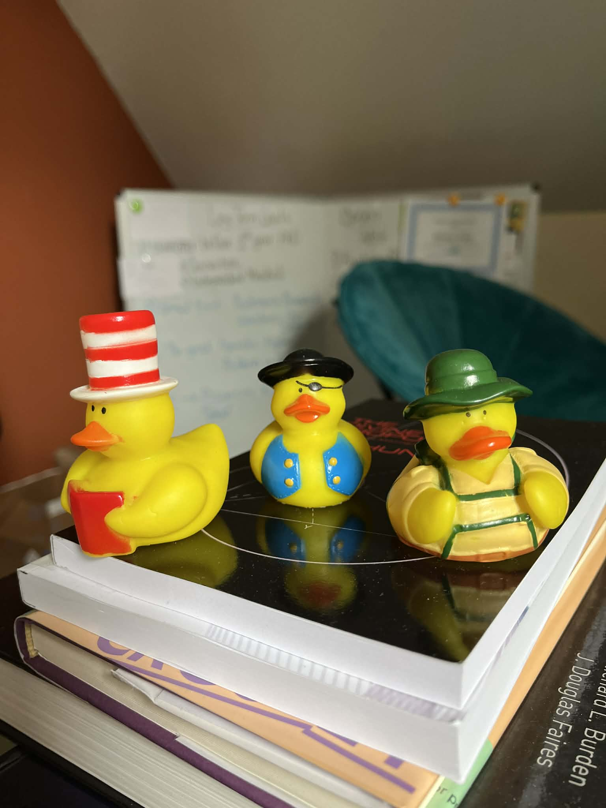
Small JoysI do have friends, but sometimes I trusted these ducks more than people. Three of them helped me a lot!
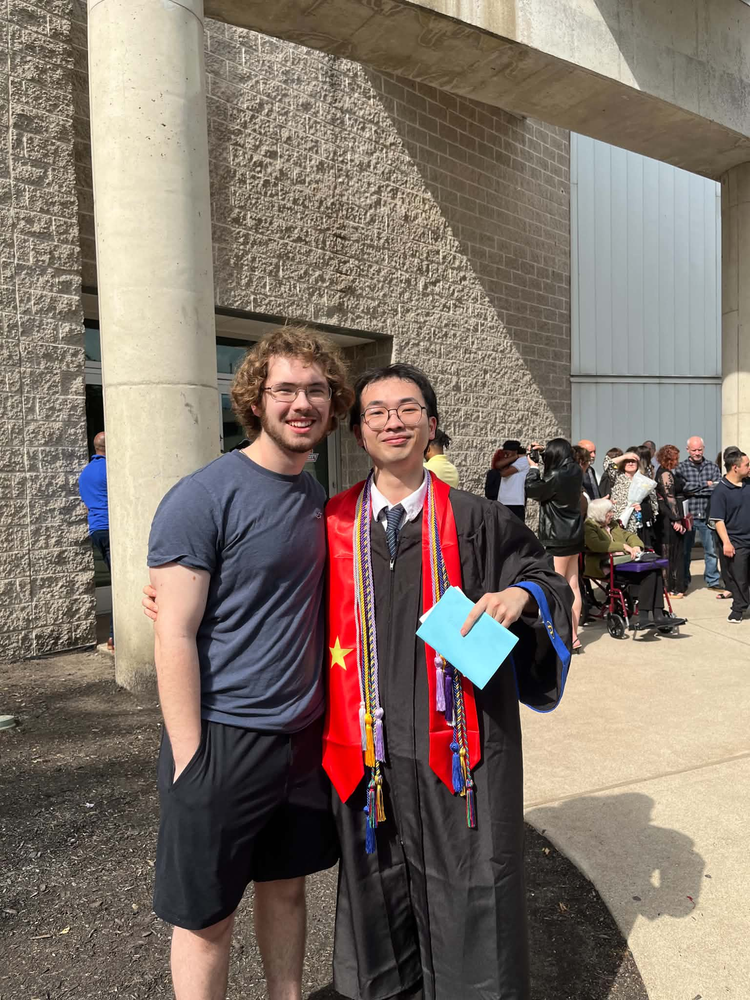
CommunityI love teaching, and I actually learned a lot from my students. One of the best student in my TA class - Colin - was actually came to my graduation when my family could not make it. He's my brother now, and in fact, all of them are.
I spent most of my undergraduate exploring different problems, though some of them are highly connected.
PhD, Applied Mathematics, Statistics & Scientific Computation · University of Maryland
Starting the PhD journey in Fall 2026. Always open to new problems, collaborators, and adventures in mathematics. If you have an interesting problem, let's talk.
Undergraduate Thesis · Augustana College
Investigating BIC phenomena in photonic systems for my undergraduate thesis — the full circle back to the physics that started the electro-optics work.
Budapest Semester in Mathematics + Augustana College · June 2025 – Present
Derived new closed-form formulas for expanding (1−ζp)n involving p-th roots of unity, with applications in algebraic number theory. Built Python simulations to validate theoretical results. This problem is solved and was presented at the ISMAA conference (Outstanding Undergraduate Award Winner)
Augustana College · June – December 2024
Implemented a hybrid Python algorithm to mitigate the Gibbs phenomenon in a Maxwell solver. This algorithm was initially developed by Dr. Benjamin Civiletti in his PhD Thesis for the University of Delaware. Refactored the codebase into an object-oriented architecture and presented the work at two department events. The next steps of this project is to apply this hybrid in modeling different optical devices, which remains opened
Beling Scholar Program · Augustana College · Advisor: Dr. Andrew Sward
Prep-predator is a famous model that was intially studied by Bouguer. In the set up, a dog chases a rabit, and both of them have constant velocities. What happens if the rabit now have a constant acceleration instead? This is still an open problem.
Interesting courses from Augustana College and the Budapest Semester in Mathematics.
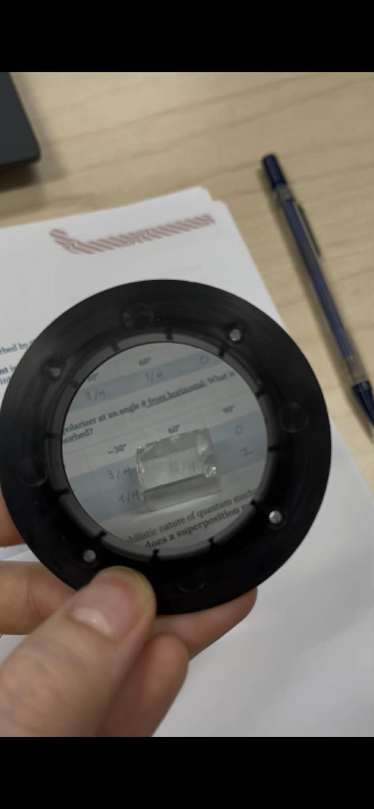
Basics of Quantum Math, Quantum System, Teleportation, and Quantum Algorithms
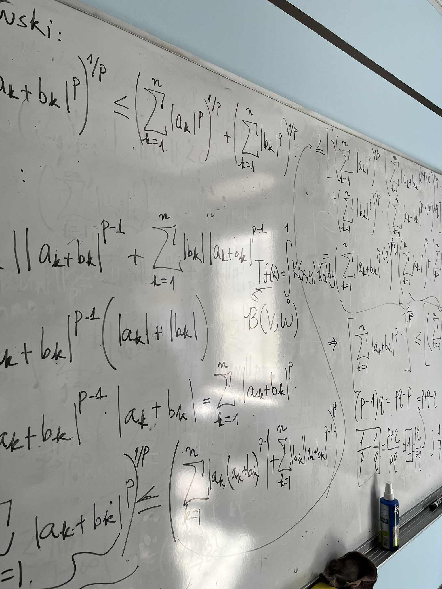
Banach and Hilbert spaces, Hahn-Banach, Open Mapping, Riesz Representation, measure theory. Advisor: Dr. Benjamin Civiletti.
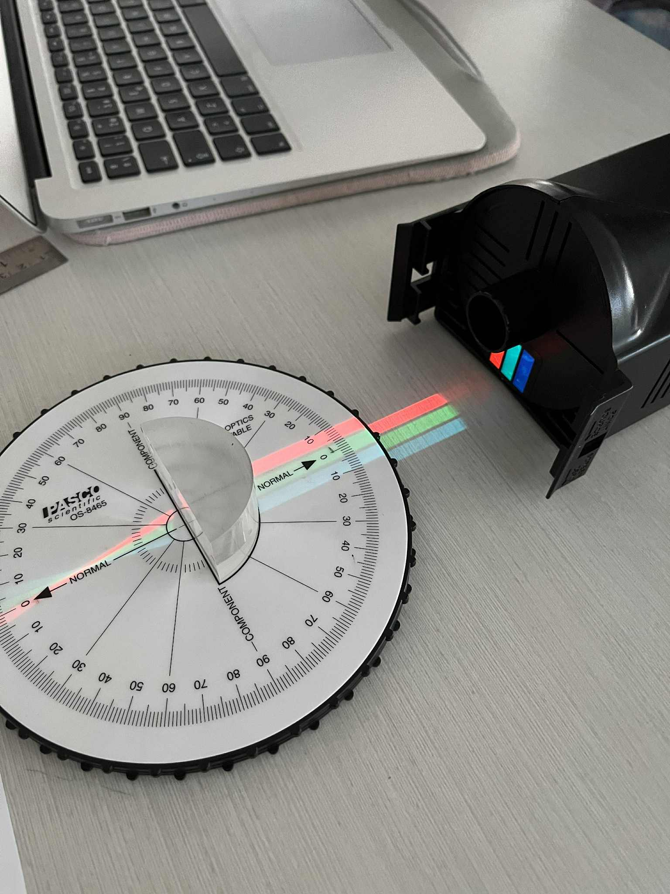
Static and Electromagnetics Field. Maxwell Equations, and Basic Wave Theory
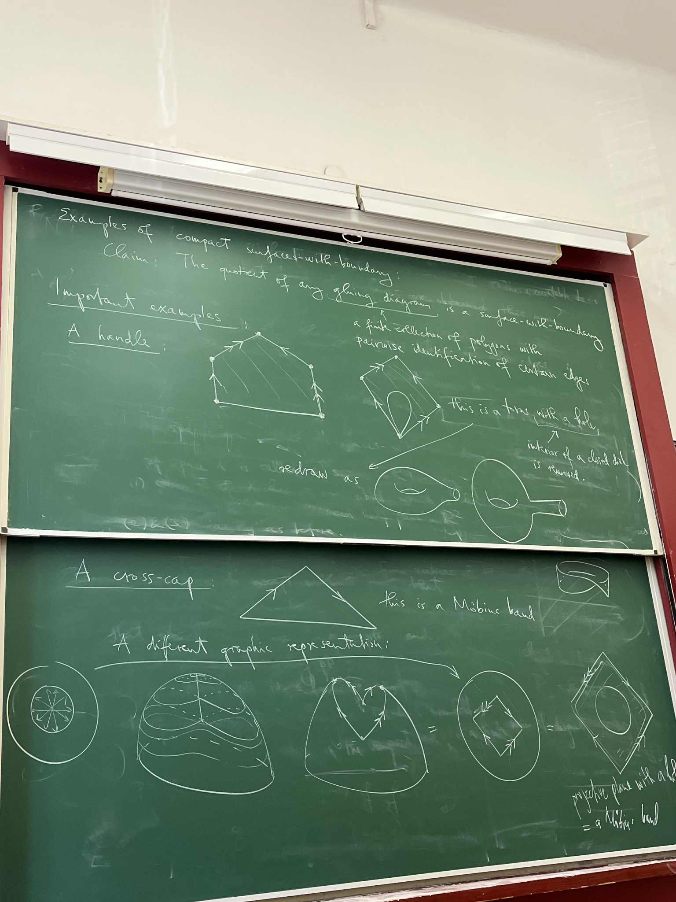
Introductory Topology. Classification of Surface. Homotopy. Fundamental Group.
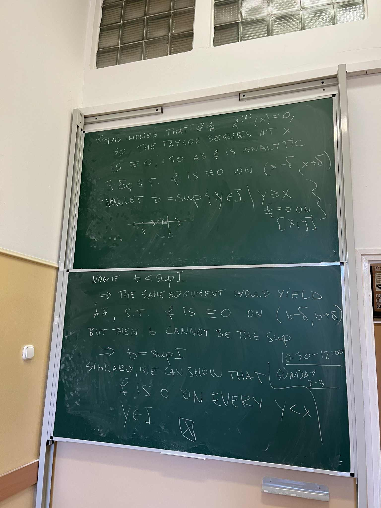
Advanced real analysis in Budapest
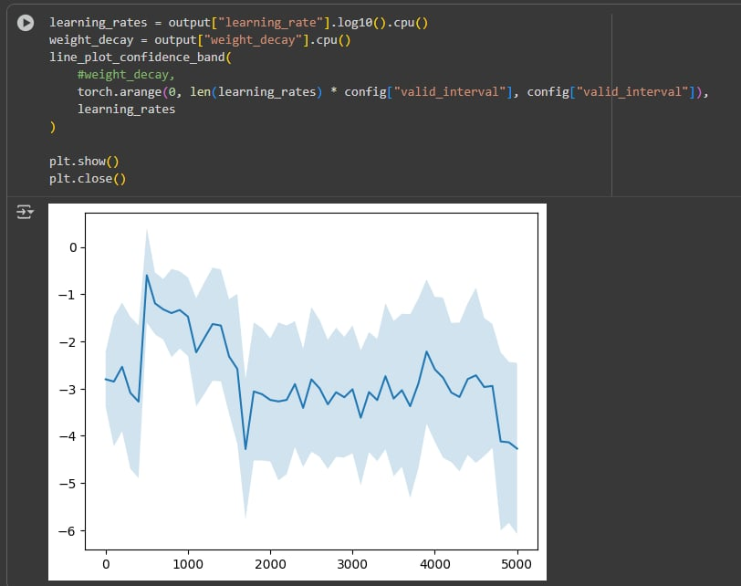
Neural networks and modern ML theory - studied in Hungary as part of the Budapest program.
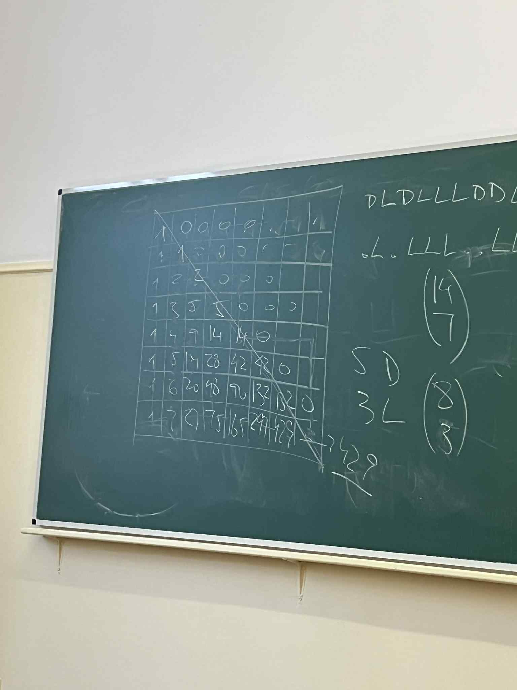
Introductory Combinatorics. Graph Theory. Ramsey Theory.
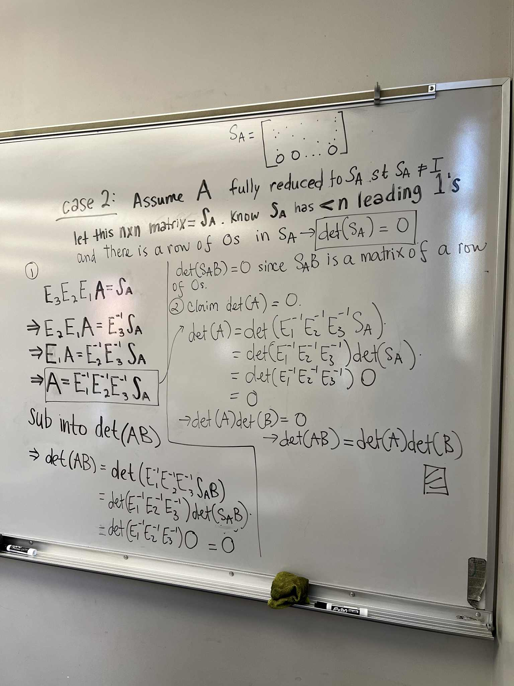
Proof-based linear algebra with an inquiry-driven approach — building every theorem from scratch.